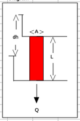

F23 ES1 Solution Sketch#
LAST NAME, FIRST NAME
R00000000
Purpose :#
Refresh groundwater principles; apply principles to quantitative cases
Assessment Criteria :#
Completion, results plausible, format correct, example calculations shown.
Problem 1 (Problem 2-3, pg. 578)#
A sand column has the following characteristics:
Determine:
Sketch the system.
The discharge velocity.
The seepage velocity.
The volumetric flow rate through the column.
sketch#

list known quantities#
list unknown quantities#
The discharge velocity, \(q = \frac{Q}{A}\)
The seepage velocity, \(u = \frac{q}{n} = \frac{Q}{nA}\)
The volumetric flow rate through the column, \(Q\)
governing principles#
Darcy’s law; \(Q=KA\frac{dh}{dl}\)
Definition(s) of discharge and seepage velocity
solution details (e.g. step-by-step computations)#
K = 1.0e-04
A = 75
dhdl= 0.01
n = 0.20
q=K*dhdl
print("discharge velocity = ",round(q,6)," cm/sec")
discharge velocity = 1e-06 cm/sec
u=q/n
print("seepage velocity = ",round(u,6)," cm/sec")
seepage velocity = 5e-06 cm/sec
Q=q*A
print("Volumetric discharge = ",round(Q,6)," ml/sec")
Volumetric discharge = 7.5e-05 ml/sec
discussion#
Direct application of Darcy’s law and definitions from the mighty internet is all that is required for this exercise.
Problem 2 (Problem 2-8, pg. 578)#
The figure below shows a piezometric map for a shallow sand aquifer. The hydraulic conductivtiy is estimated to be \(1.5 \times 10^{-2}~\frac{cm}{s}\), the saturated thickness is 40 feet, and the effective porosity is 0.3.

Determine:
Which well is expected to be the most contaminated.
The groundwater velocity and seepage velocity across the plume.
The duration that the source has been contaminating the aquifer (neglect dispersion, diffusiom, and adsorption).
The flow rate across the plume.
An explaination for contamination upgradient of the source zone.
sketch(s)#
list known quantities#
Head map (provided)
\(b~\approx~40~feet\)
\(K~\approx~ 1.5 \times 10^{-2}~\frac{cm}{s} \cdot \frac{1~in}{2.54~cm} \cdot \frac{1~ft}{12~in} \cdot \frac{86400~s}{1~day} = 42.52~\frac{ft}{day}\)
\(n~\approx~ 0.30 \)
list unknown quantities#
Which well is expected to be the most contaminated.
The groundwater velocity and seepage velocity across the plume.
The duration that the source has been contaminating the aquifer (neglect dispersion, diffusiom, and adsorption).
The flow rate across the plume.
An explaination for contamination upgradient of the source zone.
governing principles#
Darcy’s law; \(Q=KA\frac{dh}{dl}\)
Definition(s) of discharge and seepage velocity
solution details (e.g. step-by-step computations)#
Which well is expected to be the most contaminated.
If release is ongoing, probably well A in annotated map below.
If release is “past history” then probably well M near middle of the plume.

The groundwater velocity and seepage velocity across the plume.
See annotated map below.
Gradients near well A and well M are calculated directly on the map annotations.
Specific discharge values:
\(q_{near~well~A} = \frac{Q}{A} _{near~well~A}~\approx~45.52\frac{ft}{day}(0.0014)= 0.0637 \frac{ft}{day}\)
\(q_{near~well~M} = \frac{Q}{A} _{near~well~M}~\approx~45.52\frac{ft}{day}(0.00125)= 0.0569 \frac{ft}{day}\)
A reasonable average is \(q = \frac{Q}{A} _{average}~\approx~0.06 \frac{ft}{day}\)Species (seepage) velocity is
\(U=\frac{q}{n} = \frac{1}{n} \frac{Q}{A} = \frac{1}{0.3} 0.06 \frac{ft}{day} = 0.2 \frac{ft}{day}\)
The duration that the source has been contaminating the aquifer (neglect dispersion, diffusiom, and adsorption).
Choose a reasonable pathline like the one on the drawing below and measure its length, then using definition of velocity, solve for duration.
Pathline is \(\approx~925~feet\)
\(t=\frac{x}{U}= \frac{925}{0.02} = 4625~days\)
The flow rate across the plume.
Apply Darcy’s law
\(Q=qA=0.06 \frac{ft}{day} \cdot 325 ft \cdot 40 ft = 780 \frac{ft^3}{day}\)
An explaination for contamination upgradient of the source zone.
Dispersion/diffusion of constituients, and/or
The regional water table is not static and at some point in past, gradient was in Easterly direction.
discussion#
The non-static water table is very likely, and quarterly moniroting is a usual standard to detect and account for seasonal/temporal variability.
Problem 3 (Problem 2-12, pg. 579)#
Three geologic formations overlie one another with the characteristics listed below.
A constant velocity vertical flow field exists across the three formations. The hydraulic head at the top of the formations (top of formation 1) is 33 feet. The hydraulic head at the bottom of the formations (bottom of formation 3) is 21 feet.
Determine:
Sketch the system.
The hydraulic head at the internal boundary between formation 1 and 2.
The hydraulic head at the internal boundary between formation 2 and 3.
Approximate time for a tracer to flow through the three layers if the porosities \(n_1\), \(n_2\), and \(n_3\) are 0.30,0.42, and 0.35, respectively
# sketch(s)
# list known quantities
# list unknown quantities
# governing principles
# solution details (e.g. step-by-step computations)
# discussion
sketch#

list known quantities#
Thickness, hydraulic conductivities, porosities and heads as shown on sketch above.
list unknown quantities#
H at 1-2 interface.
H at 2-3 interface.
Time for tracer to traverse entire formation
governing principles#
Darcy’s law by layer
velocity = q/n
time = thickness/velocity
# Find total discharge per unit area through entire formation
htop=33
hbot=21
k1=0.0002
k2=0.000005
k3=0.001
l1=50
l2=20
l3=210
n1=0.30
n2=0.42
n3=0.35
Kbar=(l1+l2+l3)/((l1/k1) + (l2/k2) + (l3/k3))
print("vertical composite Kv: ",round(Kbar,6)," ft/sec")
dH=htop - hbot
dl = l1+l2+l3
qt=Kbar*dH/dl
print("vertical hydraulic gradient :",round(dH/dl,6)," ft/ft")
print("vertical specific discharge q: ",round(qt,6)," ft/sec")
vertical composite Kv: 6.3e-05 ft/sec
vertical hydraulic gradient : 0.042857 ft/ft
vertical specific discharge q: 3e-06 ft/sec
# find head loss in layer 1
dh1 = l1*qt/k1
h12 = htop -dh1
print("head at layer 1-2 interface :",round(h12,2)," ft ")
head at layer 1-2 interface : 32.33 ft
# find head loss in layer 2
dh2 = l2*qt/k2
h23 = htop - dh1 -dh2
print("head at layer 2-3 interface :",round(h23,2)," ft ")
head at layer 2-3 interface : 21.57 ft
# time in layer 1
time1 = l1*n1/qt
print("tracer time in layer 1 :",round(time1,6)," sec")
tracer time in layer 1 : 5575000.0 sec
# time in layer 2
time2 = l2*n2/qt
print("tracer time in layer 2 :",round(time2,6)," sec")
tracer time in layer 2 : 3122000.0 sec
# time in layer 3
time3 = l3*n3/qt
print("tracer time in layer 3 :",round(time3,6)," sec")
tracer time in layer 3 : 27317500.0 sec
totaltime=time1+time2+time3
totaltime=totaltime/86400
print("Tracer travel time :",round(totaltime,3)," days ")
Tracer travel time : 416.834 days
Problem 4#
Three monitoring wells are in a homogeneous isotropic confined aquifer with transmissivity \(T=1700\frac{m^2}{day}\). The observed piezometric heads are given in the table below:
Well ID |
Easting Coordinate (m) |
Northing Coordinate (m) |
Head (m) |
|---|---|---|---|
MW-1 |
0 |
0 |
120.0 |
MW-2 |
0 |
300 |
118.4 |
MW-3 |
200 |
0 |
122.5 |
Determine:
A contour map of the piezometric surface in the vicinity of these wells using a 1-meter contour interval.
Magnitude and direction of the gradient of head.
# sketch(s)
# list known quantities
# list unknown quantities
# governing principles
# solution details (e.g. step-by-step computations)
# discussion
import numpy
import math
Tran=1700.0
# well A is origin
wellID =['Well A','Well B','Well C']
well_X =[0.0,0.0,200.0]
well_Y =[0.0,300.0,0.0]
well_Z =[120,118.4,122.5]
amatrix = [[0 for j in range(3)]for i in range(3)]
b = [0 for j in range(3)]
# A-matrix
for i in range(3):
amatrix[i][0]=well_X[i]
amatrix[i][1]=well_Y[i]
amatrix[i][2]=1.0
b[i]= well_Z[i]
amatrix = numpy.array(amatrix) #typecast as numpy array
b = numpy.array(b)
x = numpy.linalg.solve(amatrix,b) # solve equation of plane
# recover and report results
print("x-component hydraulic gradient: ",round(-x[0],3))
print("y-component hydraulic gradient: ",round(-x[1],3))
grad = math.sqrt(x[0]**2+x[1]**2)
print("magnitude hydraulic gradient: ",round(grad,3))
print("direction cosine x-component hydraulic gradient: ",round(-x[0]/grad,3))
print("direction cosine y-component hydraulic gradient: ",round(-x[1]/grad,3))
gradH = grad*Tran
print("magnitude head gradient: ",round(gradH,3)," meters per day")
print("u= -K*dH/dx: ",round(-x[0]*Tran,3),"m/day")
print("v= -K*dH/dy: ",round(-x[1]*Tran,3),"m/day")
# use this if want to plot
list1 = [0,-100*(x[0]/grad)]
list2 = [0,-100*(x[1]/grad)]
stry='Distance Northing'
strx='Distance Easting'
strtitle='Hydraulic Gradient and 3-Well Locations\n'+'Gradient Magnitude: '+ str(round(grad,3)) +'\n Red segment is 100X direction cosines'
plotlabel=['Wells','Gradient']
from matplotlib import pyplot as plt # import the plotting library from matplotlibplt.show()
plt.plot(well_X, well_Y, color ='green', marker ='o', linestyle ='none') # create a line chart, years on x-axis, gdp on y-axis
plt.plot(list1, list2, color ='red', marker ='x', linestyle ='solid')
plt.title(strtitle)# add a title
plt.ylabel(stry)# add a label to the x and y-axes
plt.xlabel(strx)
plt.legend(plotlabel)
plt.grid()
plt.show() # display the plot
x-component hydraulic gradient:
-0.012
y-component hydraulic gradient: 0.005
magnitude hydraulic gradient: 0.014
direction cosine x-component hydraulic gradient: -0.92
direction cosine y-component hydraulic gradient: 0.392
magnitude head gradient: 23.103 meters per day
u= -K*dH/dx: -21.25 m/day
v= -K*dH/dy: 9.067 m/day
# build XYZ structure from 3-well function
nrows=401
ncols=301
distancex=[0 for i in range(ncols)]
distancey=[0 for i in range(nrows)]
head=[[0 for j in range(ncols)] for i in range(nrows)]
for j in range(ncols):
distancex[j]=float(j)
for i in range(nrows):
distancey[i]=float(i)
for j in range(ncols):
for i in range(nrows):
head[i][j]=x[0]*distancex[j] + x[1]*distancey[i] + x[2]
my_xyz = [] # empty list
for irow in range(nrows):
for jcol in range(ncols):
my_xyz.append([distancex[jcol],distancey[irow],head[irow][jcol]])
import pandas
my_xyz = pandas.DataFrame(my_xyz) # convert into a data frame
#print(my_xyz) # activate to examine the dataframe
import numpy
import matplotlib.pyplot
from scipy.interpolate import griddata
# extract lists from the dataframe
coord_x = my_xyz[0].values.tolist() # column 0 of dataframe
coord_y = my_xyz[1].values.tolist() # column 1 of dataframe
coord_z = my_xyz[2].values.tolist() # column 2 of dataframe
coord_xy = numpy.column_stack((coord_x, coord_y))
# Set plotting range in original data units
lon = numpy.linspace(min(coord_x), max(coord_x), 300)
lat = numpy.linspace(min(coord_y), max(coord_y), 80)
X, Y = numpy.meshgrid(lon, lat)
# Grid the data; use linear interpolation (choices are nearest, linear, cubic)
Z = griddata(numpy.array(coord_xy), numpy.array(coord_z), (X, Y), method='cubic')
# Build the map
fig, ax = matplotlib.pyplot.subplots()
fig.set_size_inches(6, 8)
CS = ax.contour(X, Y, Z, levels = 6)
# build flowline to overlaY
list1 = [150,150-100*(x[0]/grad)]
list2 = [150,150-100*(x[1]/grad)]
ax.plot(list1, list2, color ='red', marker ='.', linestyle ='solid')
ax.clabel(CS, inline=2, fontsize=16)
ax.set_title('Contour Plot from Gridded Data File')
Text(0.5, 1.0, 'Contour Plot from Gridded Data File')
Problem 5#
Three monitoring wells are in a homogeneous anisotropic aquifer with saturated thickness of 20 m, and hydraulic conductivity given by
The observed piezometric heads are given in the table below:
Well ID |
Easting Coordinate (m) |
Northing Coordinate (m) |
Head (m) |
|---|---|---|---|
MW-1 |
0 |
0 |
120.0 |
MW-2 |
0 |
300 |
118.4 |
MW-3 |
200 |
0 |
122.5 |
Determine:
A contour map of the piezometric surface in the vicinity of these wells using a 1-meter contour interval (identical to previous problem).
Magnitude and direction of the specific discharge through the aquifer.
Determine the principal values of the hydraulic conductivity \(\mathbf{K}\) tensor, and the angle between the principal axes and the Easting-Northing coordinate system.
# sketch(s)
# list known quantities
# list unknown quantities
# governing principles
# solution details (e.g. step-by-step computations)
# discussion
import numpy
import math
K=[[30,8],[8,10]]
# well A is origin
wellID =['Well A','Well B','Well C']
well_X =[0.0,0.0,200.0]
well_Y =[0.0,300.0,0.0]
well_Z =[120,118.4,122.5]
amatrix = [[0 for j in range(3)]for i in range(3)]
b = [0 for j in range(3)]
# A-matrix
for i in range(3):
amatrix[i][0]=well_X[i]
amatrix[i][1]=well_Y[i]
amatrix[i][2]=1.0
b[i]= well_Z[i]
amatrix = numpy.array(amatrix) #typecast as numpy array
b = numpy.array(b)
x = numpy.linalg.solve(amatrix,b) # solve equation of plane
# recover and report results
print("x-component hydraulic gradient: ",round(-x[0],3))
print("y-component hydraulic gradient: ",round(-x[1],3))
grad = math.sqrt(x[0]**2+x[1]**2)
print("magnitude hydraulic gradient: ",round(grad,3))
print("direction cosine x-component hydraulic gradient: ",round(-x[0]/grad,3))
print("direction cosine y-component hydraulic gradient: ",round(-x[1]/grad,3))
#gradH = grad*Tran
#print("magnitude head gradient: ",round(gradH,3)," meters per day")
u = -x[0]*K[0][0]-x[1]*K[0][1]
v = -x[0]*K[1][0]-x[1]*K[1][1]
print("u= -K*dH/dx: ",round(u,3),"m/day")
print("v= -K*dH/dy: ",round(v,3),"m/day")
# use this if want to plot
list1 = [0,-100*(x[0]/grad)]
list2 = [0,-100*(x[1]/grad)]
list11 = [0,100*(u)]
list22 = [0,100*(v)]
stry='Distance Northing'
strx='Distance Easting'
strtitle='Hydraulic Gradient and 3-Well Locations\n' + \
'Gradient Magnitude: '+ str(round(grad,3)) + '\n Red segment is 100X direction cosines' + \
'\n Blue Segment is 100X Specific Discharge Velocities'
plotlabel=['Wells','Hydraulic Gradient','Flowline']
from matplotlib import pyplot as plt # import the plotting library from matplotlibplt.show()
plt.plot(well_X, well_Y, color ='green', marker ='o', linestyle ='none') # create a line chart, years on x-axis, gdp on y-axis
plt.plot(list1, list2, color ='blue', marker ='.', linestyle ='solid')
plt.plot(list11, list22, color ='red', marker ='.', linestyle ='solid')
plt.title(strtitle)# add a title
plt.ylabel(stry)# add a label to the x and y-axes
plt.xlabel(strx)
plt.legend(plotlabel)
plt.grid()
plt.show() # display the plot
x-component hydraulic gradient: -0.012
y-component hydraulic gradient: 0.005
magnitude hydraulic gradient: 0.014
direction cosine x-component hydraulic gradient: -0.92
direction cosine y-component hydraulic gradient: 0.392
u= -K*dH/dx: -0.332 m/day
v= -K*dH/dy: -0.047 m/day
# build XYZ structure from 3-well function
nrows=401
ncols=301
distancex=[0 for i in range(ncols)]
distancey=[0 for i in range(nrows)]
head=[[0 for j in range(ncols)] for i in range(nrows)]
for j in range(ncols):
distancex[j]=float(j)
for i in range(nrows):
distancey[i]=float(i)
for j in range(ncols):
for i in range(nrows):
head[i][j]=x[0]*distancex[j] + x[1]*distancey[i] + x[2]
my_xyz = [] # empty list
for irow in range(nrows):
for jcol in range(ncols):
my_xyz.append([distancex[jcol],distancey[irow],head[irow][jcol]])
import pandas
my_xyz = pandas.DataFrame(my_xyz) # convert into a data frame
#print(my_xyz) # activate to examine the dataframe
import numpy
import matplotlib.pyplot
from scipy.interpolate import griddata
# extract lists from the dataframe
coord_x = my_xyz[0].values.tolist() # column 0 of dataframe
coord_y = my_xyz[1].values.tolist() # column 1 of dataframe
coord_z = my_xyz[2].values.tolist() # column 2 of dataframe
coord_xy = numpy.column_stack((coord_x, coord_y))
# Set plotting range in original data units
lon = numpy.linspace(min(coord_x), max(coord_x), 300)
lat = numpy.linspace(min(coord_y), max(coord_y), 80)
X, Y = numpy.meshgrid(lon, lat)
# Grid the data; use linear interpolation (choices are nearest, linear, cubic)
Z = griddata(numpy.array(coord_xy), numpy.array(coord_z), (X, Y), method='cubic')
# Build the map
fig, ax = matplotlib.pyplot.subplots()
fig.set_size_inches(6, 8)
CS = ax.contour(X, Y, Z, levels = 6)
# build flowline to overlaY
list1 = [150,150-100*(x[0]/grad)]
list2 = [150,150-100*(x[1]/grad)]
list11 = [150,150+100*(u)]
list22 = [150,150+100*(v)]
ax.plot(list1, list2, color ='blue', marker ='.', linestyle ='solid')
ax.plot(list11, list22, color ='red', marker ='.', linestyle ='solid')
ax.clabel(CS, inline=2, fontsize=16)
ax.set_title('Contour Plot from Gridded Data File')
Text(0.5, 1.0, 'Contour Plot from Gridded Data File')